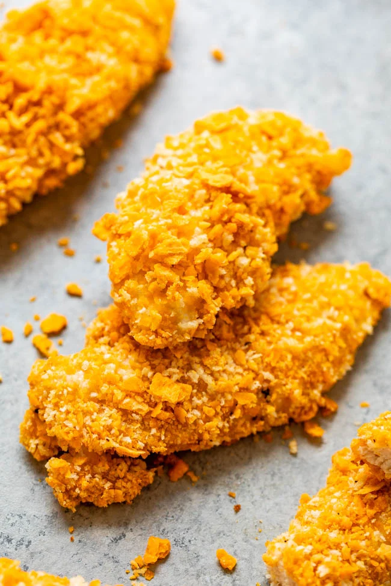

Not your usual chicken tenders

These chicken tenders are unusual compared to other chicken tenders
because they are breaded with cheez its and not your usual flour and egg mixture.
The cheesy and salty combination of these crackers really brings your chicken to
the next level and will have everyone asking for seconds and sometimes even thirds.
This recipe is for a family of 2 but you can double, triple or even quadruple this recipe to feed
however many people you want!
This recipe is quick, easy, kid approved and cost effective, you can also find a recipe
for our amazing side dish loaded mashed potatoes that i know you will love!
Needed ingredients
- Chicken tenderloins 1lbs
- Preferred flavor of cheez its, use a spicy kind for a kick!
- Your favorite brand of mustard, we like Heinz
- Salt, pepper, garlic and onion powder, paprika and cumin.
- That's it! Easy, right ?
Follow these steps
- First, remove the tendon from the tenderloin, make sure to wash your chicken
- Crush your cheez its by putting them in a sandwich bag and rolling them with a rolling pin, if you don't have one, you can use a can
- Season your chicken as much as you'd like, then layer it with mustard
- Put your crushed crackers into a large bowl
- Carefully coat your chicken with the cheez its
- Once they are all coated, layer them on a large baking dish and make sure they are not touching
- Let those set for about 30 minutes so the breading stays on well
- Turn your oven to 350 and cook the chicken tenders for about 30 minutes, turning over halfway through
- Make sure to check that the chicken is cooked all the way through and enjoy with your favorite sauce
Return to home